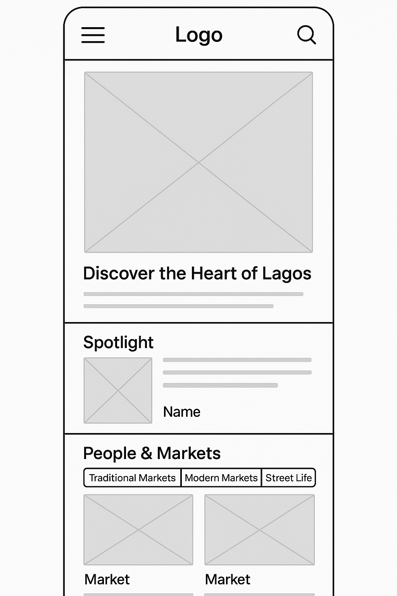
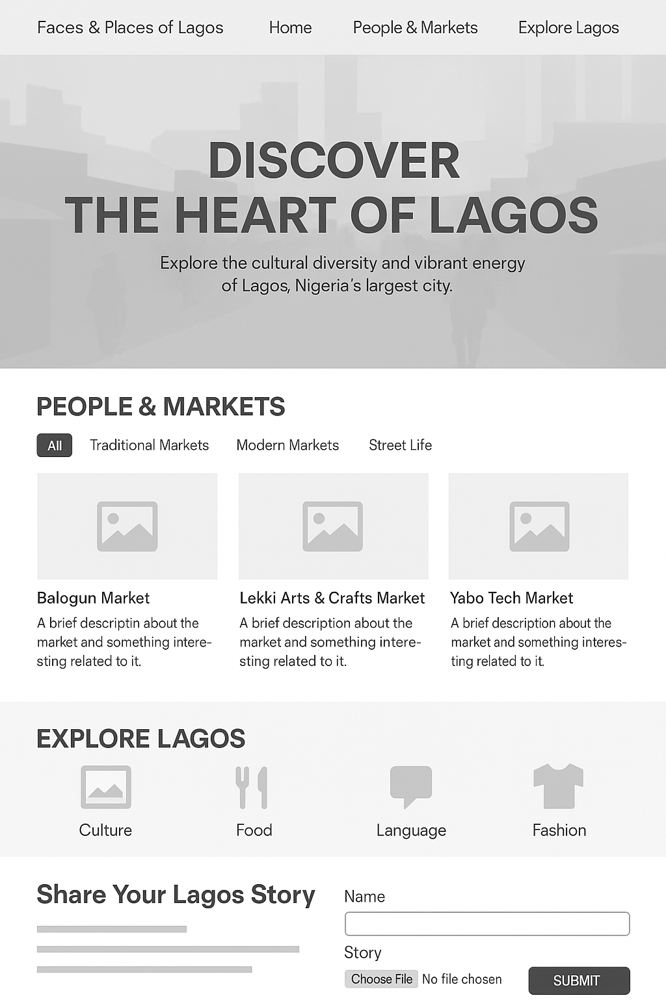

Site Plan: Faces & Places of Lagos
Site Name
Faces & Places of Lagos
This name reflects the heart of the project: real people and everyday scenes across Lagos, Nigeria. It's authentic, easy to remember, and intriguing. Potential domain: facesoflagos.org
Site Purpose
The purpose of this site is to visually and interactively explore Lagos’s vibrant human stories, markets, and cultural identity. It will inform and inspire visitors through photography, personal stories, and cultural highlights of one of Africa’s most energetic cities.
Scenarios
- Which traditional markets should I visit to experience authentic Lagos street life?
- Where can I read stories about the everyday people of Lagos?
- How do I share my own experience or story about Lagos?
Color Schema
The color scheme captures Lagos’s vibrant warmth and natural textures.
Primary - Deep Green
Accent - Orange
- Primary Color (#1B5E20): Used for headers, nav backgrounds, buttons.
- Accent Color (#FF9800): Used for calls-to-action, hover effects, icons.
Typography
- Playfair Display (Serif): For headlines, titles, and hero text – elegant and bold.
- Open Sans (Sans-serif): For body text – clean, readable, modern.
Wireframes
Mobile View
Mobile View

Desktop View

Pages Description
Home Page
- Large hero image with welcome message: “Discover the Heart of Lagos.”
- Introductory content describing Lagos’s energy and diversity.
- Dynamic spotlight section with personal stories (from JSON).
People & Markets Page
- Card-style layout with markets and individuals’ stories (WebP images from JSON).
- Filterable categories: “Traditional Markets”, “Modern Markets”, “Street Life.”
Explore Lagos Page
- Sections on food, fashion, language, festivals, and more.
- Interactive map with pinned cultural spots and markets.
- “Share Your Lagos Story” form with validation, timestamp, localStorage confirmation.